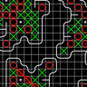

|

|
Amoba
This is a simple five in a row game.
The goal to put five X in a row.
- You can play with Droid AI or with your frends.
- You can resize the cells and the size of the playground.
- You can scroll and zoom the playground.
- You can undo the last step.
- You can set the color of playground.
- It's show the last step.
- Save the last playtable.
- If you login in the GameServer app, you can play with your frends on the internet.
- You can list the other players.
- You can invite your friend for a game.
- You can send a short message to your frends.
|
|
|
GameSever
This is a simple http webserver with servlets.
This server contains a servlet, which is handle the players actions.
- You can put it in the launcher as a widget.
- You can set the log type.
- You can set the port of the server.
- You can use it as an own web server if you change the index.html in the SDCard/gameServerRoot.
- After start it shows the address, you can set this address in the amoba setting and you can play with your frends.
I suggest to turn on in the phone developer settning the stay awake option, and put the phone on charger.
If you have a question, drop me a mail landroo9@gmail.com :)
|
|
|
Colorizer
This is a simple color filler game.
The goal to occupy the whole playground by choosing the right color.
- You can resize the cells and the size of the playground.
- You can scroll and zoom the playground.
- You can undo the last step.
- Save the last playtable.
|
|
|
Jewels
This is a simple BeJewelled clone.
The goal to set three same stone in a vertical or horizontal row by a change up two near stone.
- You can set the size of stones.
- You can set the size of the play table.
- You can scroll the play table.
|
|
|
textReader
This is a simple textreader application.
- Support ePub, mobi(unencripted), txt and html/xml formats.
- With the installed dictionary, translate the selected word.
- By the built in speech synthesis, read the book.
- Suport page zooming.
- You can find a word in a page.
- Support hyperlinks.
|
|
|
EngHunBig
This is a simple English-Hungarian, Hungarian-English offline dictionary, contains more than 300.000 words and idioms.
- The first running initialize the word database.
- The words can be find different method.
- The selected word spoken on the default language.
- Store the last found wrods.
|
|
|
EngHunMini
This is a simple English-Hungarian, Hungarian-English offline dictionary, contains more than 47.000 words and idioms.
- The first running initialize the word database.(When low storage may be deleted)
- The words can be find different method.
- The selected word spoken on the default language.
- Stroe the last found wrods.
|
|
|
EspHunMini
This is a simple Spanish-Hungarian, Hungarian-Spanish offline dictionary, contains more than 5.000 words and idioms.
- The first running initialize the word database.(When low storage may be deleted)
- The words can be find different method.
- The selected word spoken on the default language.
- Stroe the last found wrods.
|
|
|
FraHunBig
This is a simple French-Hungarian, Hungarian-French offline dictionary, contains more than 186.000 words and idioms.
- The first running initialize the word database.(When low storage may be deleted)
- The words can be find different method.
- The selected word spoken on the default language.
- Stroe the last found wrods.
|
|
|
GerHunMini
This is a simple German-Hungarian, Hungarian-German offline dictionary, contains more than 35.000 words and idioms.
- The first running initialize the word database.(When low storage may be deleted)
- The words can be find different method.
- The selected word spoken on the default language.
- Stroe the last found wrods.
|
|
|
Pipe Line
This is a simple pipe line builder game.
The goal to let reach the fluid all ends by turn the pipes in correct position.
- You can resize the pipes and the size of the playground.
- You can scroll and zoom the playground by two fingers.
- You can set the color of pipe and the fluid.
|
|
|
Felfedezők napja
Legyen Ön is felfedező!
Ismerje meg a tudományos expedíciók sajátos világát, kóstoljon bele az expedíciók nyújtotta élményekbe, találkozzon a kutatókkal, tegye próbára képességeit, tapasztalja meg, hogyan boldogulna egy expedíción és játsszon velünk! Töltsön egy kellemes napot tartalmas szórakozással és pillantson bele a terepi kutatók munkájába! Rendezvényünkön a terepi kutatás minden területe helyet kap: barlangkutatás, klímakutatás, őslénykutatás, ősföldrajzi kutatás, földtani kutatás, felszínfejlődés-kutatás, ökológiai kutatás, régészet, néprajzkutatás, űrkutatás.
|
|
|
Árvíz 2013
Árvízi helyzetjelentés 2013
Segíts Te is a magyarországi árvízi károk megelőzésében! Csatlakozz a védekezésben résztvevő közösségünkhöz, és küldj egy fotót az általad észlelt árvízi helyzetről, hogy az Országos Vízügyi Főigazgatóság minél hamarabb megtehesse a szükséges védelmi intézkedéseket.
Az Árvízi helyzetjelentés 2013 alkalmazás segítségével akár már a helyszínről bejelentheted a megáradt vízfolyások okozta jelenségeket és károkat. A helyzetjelentéshez tölts fel legalább egy, az árvízi jelenségről készült fotót az alkalmazásba rövid, informatív szöveg kíséretében. A telefonban lévő GPS segítségével az alkalmazás térképen rögzíti a bejelentett esemény helyét, majd az általad feltöltött információkat a www.vizugy.hu oldalon jeleníti meg, ahol a hazai védelmi szervek által publikált hasznos információk is megtalálhatók.
|
|
|
Mindenki gyalogos
Autózol? Bringázol? BKV-zol? Sokan sokféleképpen érjük el céljainkat a mindennapokban.
Közben sokszor nem figyelünk egymásra és elfelejtjük, hogy valójában mindenki gyalogosnak születik.
Ez az alapgondolata új, országos kampányunknak.
A közlekedés partnerség – de legalábbis annak kellene lennie.
A csúszós utakon, az esti és reggeli szürkületben naponta történnek halálos balesetek.
A gyalogosok sokszor a zebrán sincsenek biztonságban, pedig ők a legtörékenyebbek.
Kampányunk célja, hogy jobban odafigyeljünk rájuk.
Csatlakozz a kampányhoz! Ha veszélyes útszakaszt találsz, töltsd fel interaktív térképünkre az alkalmazásban! Figyeljünk jobban egymásra! Hiszen mindenki gyalogosnak születik...
|
|
|
MNM-Guide
Az alkalmazás a Magyar Nemzeti Múzeum Kelet és nyugat határáncímű állandó régészeti kiállításának interaktív megismeréséhez készült. Használatával a látogató közelebb kerülhet a Kárpát-medence gazdag régészeti múltjához és kincseihez.
Tárlatvezetés:
A tárlatvezetés funkció egy automatikus információ szolgáltatás a kiállítás termeiről. Ha az egyik teremből a másikba átmegyünk az elérhető adattartalom automatikusan megváltozik a képernyőn. Jobb alsó sarokban a funkciógombok fentről lefelé a következők:
- Váltás a Kiállítás térképre- Ugrás a teremhez tartozó tárgyakhoz
- Szöveg felolvasásának ki/be kapcsolása
- Korszakhoz tartozó video lejátszása
A termek között a két vékony nyíl segítségével válthatunk.
A teremhez tartozó tárgyak:
A korszakokhoz tartozó lelet listában a tárgyra kattintva részletes információt kaphatunk. A lelet helyét megtekinthetjük a múzeumon belül illetve a lelőhelyét a Kárpát-medencében. A fényképezőgép ikonra tapintva részletes képeket nézhetünk meg.
|